")
")
")
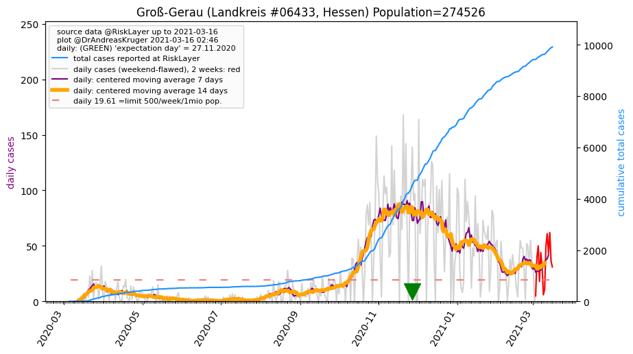
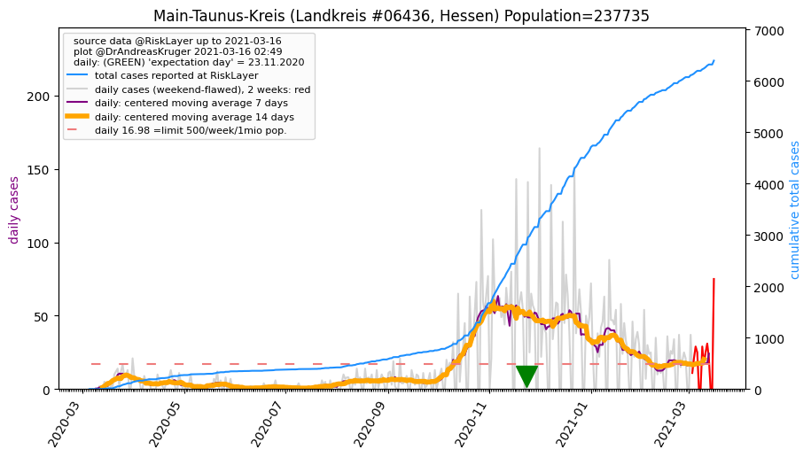
")
")
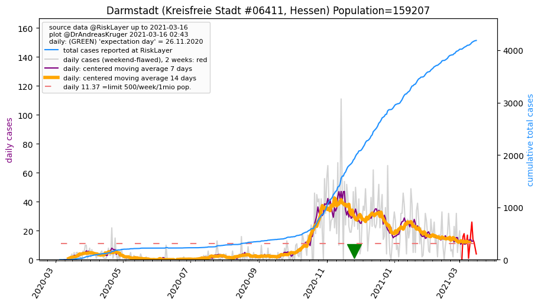
")
")
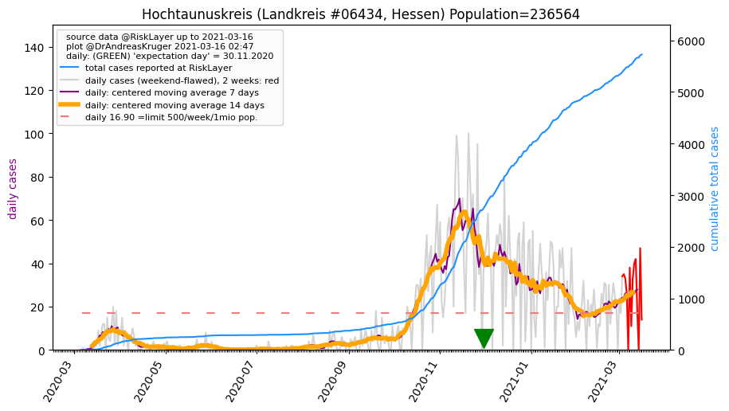
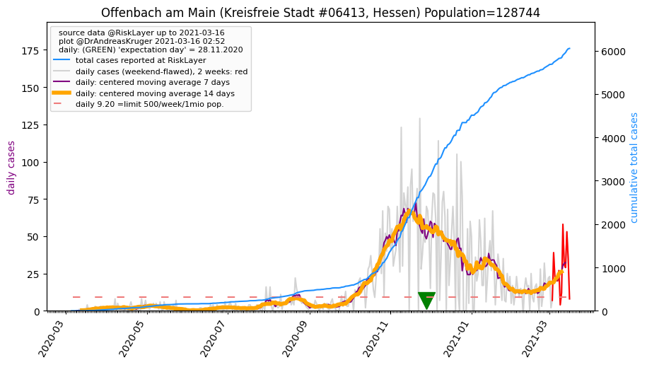
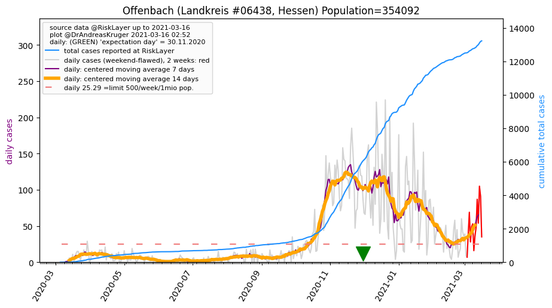
")
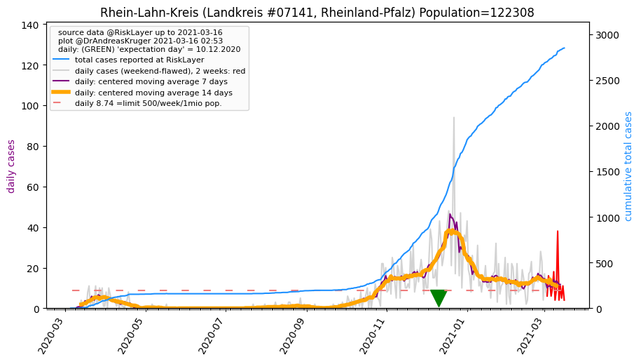
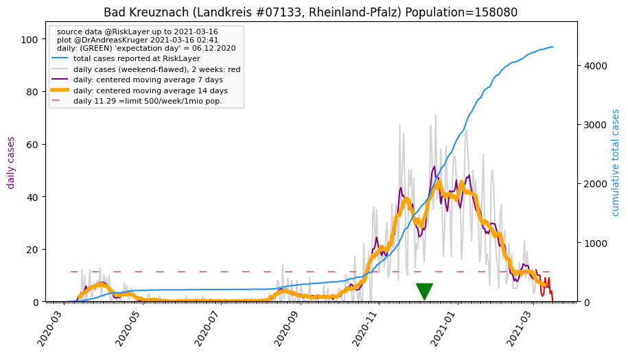
")
_KS (49.8 km)")
")
| Mainz_KS (0.0 km) |
Wiesbaden_KS (11.8 km) |
Mainz-Bingen_LK (13.0 km) |
Groß-Gerau_LK (18.2 km) 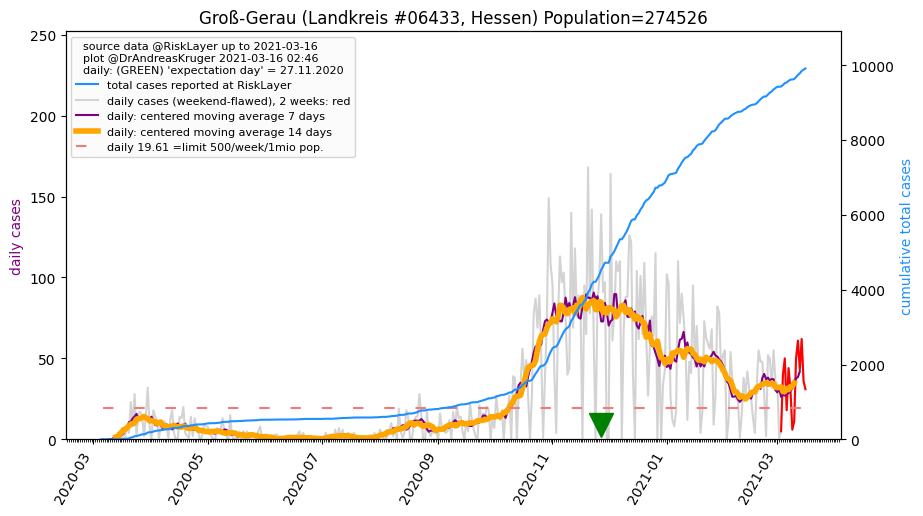 |
| Main-Taunus-Kreis_LK (19.9 km) 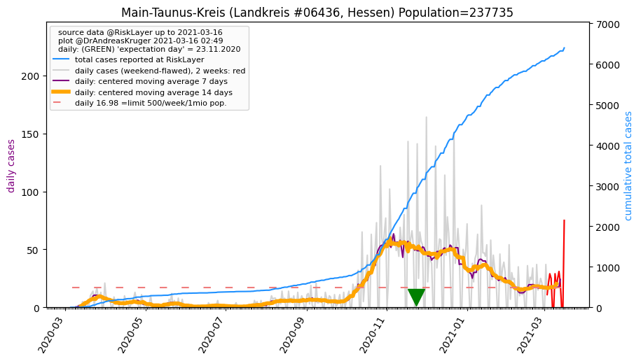 |
Rheingau-Taunus-Kreis_LK (21.9 km) |
Alzey-Worms_LK (24.6 km) |
Darmstadt_KS (32.1 km) 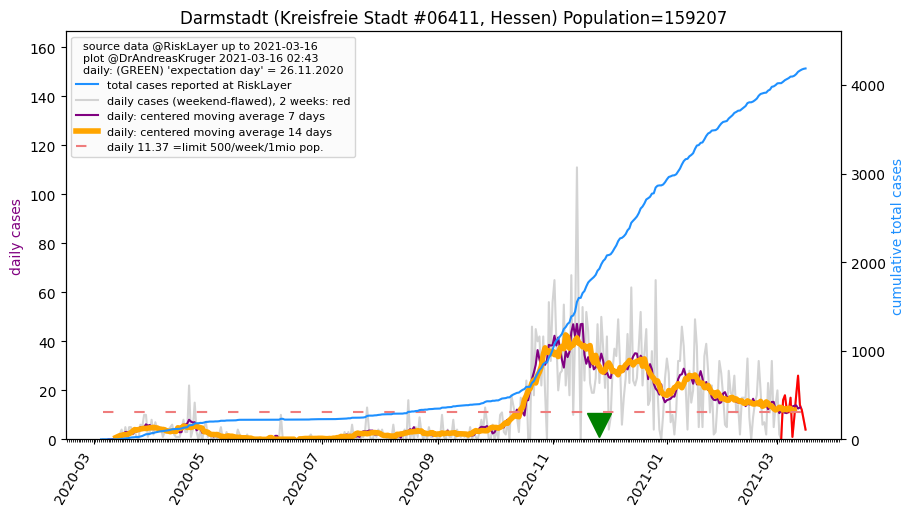 |
| Frankfurt am Main_KS (33.0 km) |
Worms_KS (36.6 km) |
Hochtaunuskreis_LK (39.0 km) 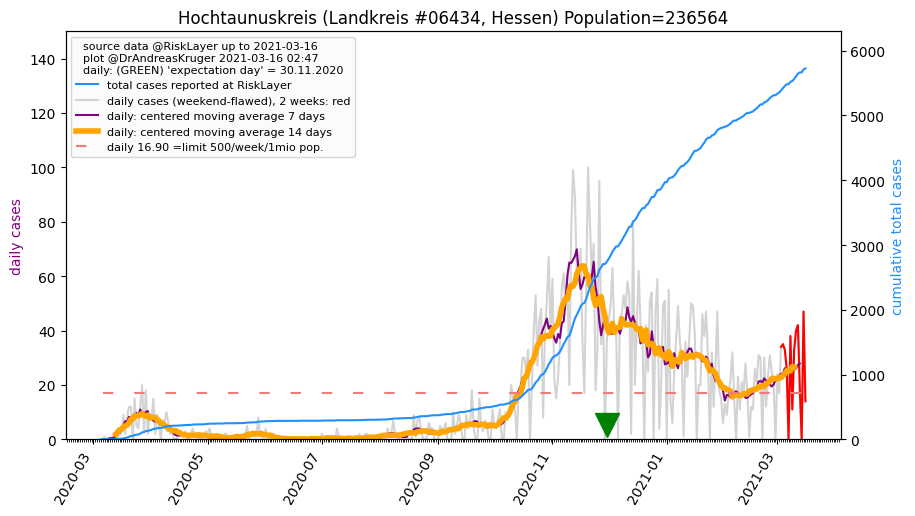 |
Offenbach am Main_KS (40.8 km) 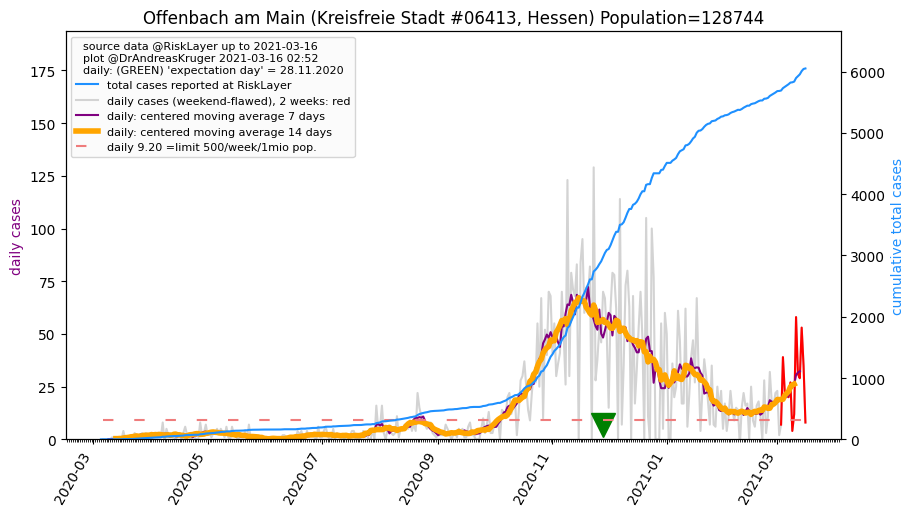 |
| Offenbach_LK (41.2 km) 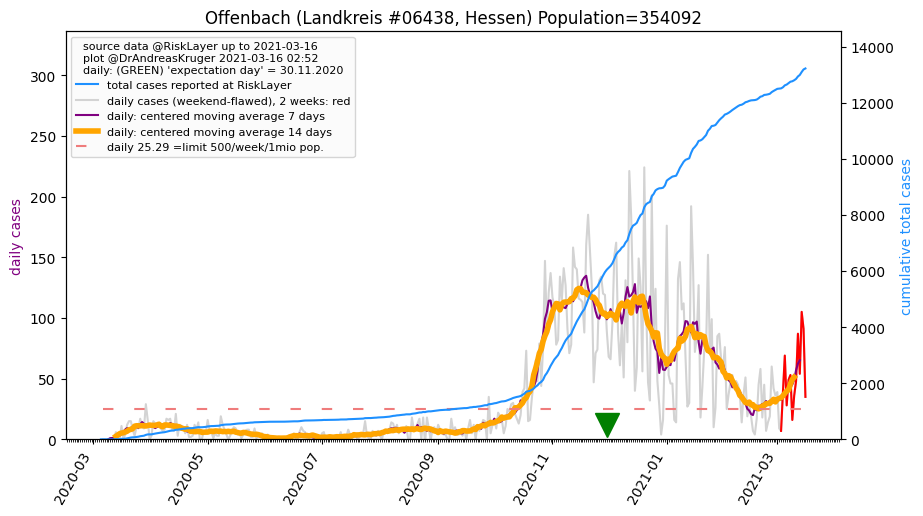 |
Darmstadt-Dieburg_LK (41.9 km) |
Rhein-Lahn-Kreis_LK (43.0 km) 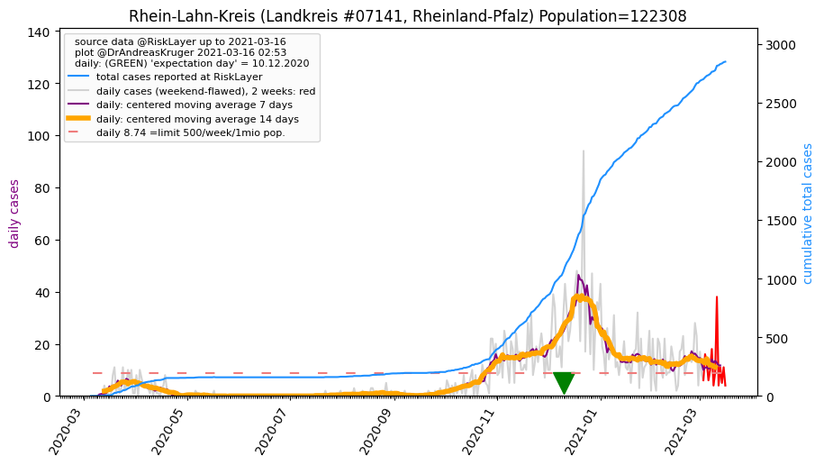 |
Bad Kreuznach_LK (43.2 km) 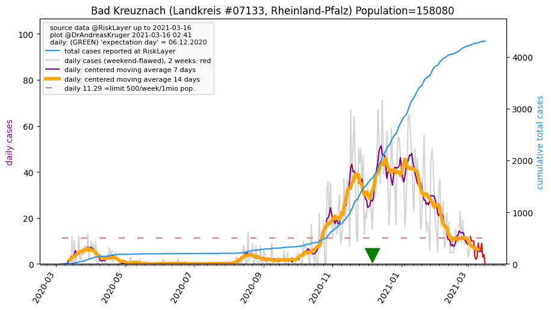 |
| Donnersbergkreis_LK (44.7 km) |
Frankenthal (Pfalz)_KS (49.8 km) |
Bergstraße_LK (49.8 km) |
All plots are regenerated with new data every night. Beware this temporary hotspot is an experimental page - it might get removed, so please do not link to it. Instead link to project http://tiny.cc/cov19de.